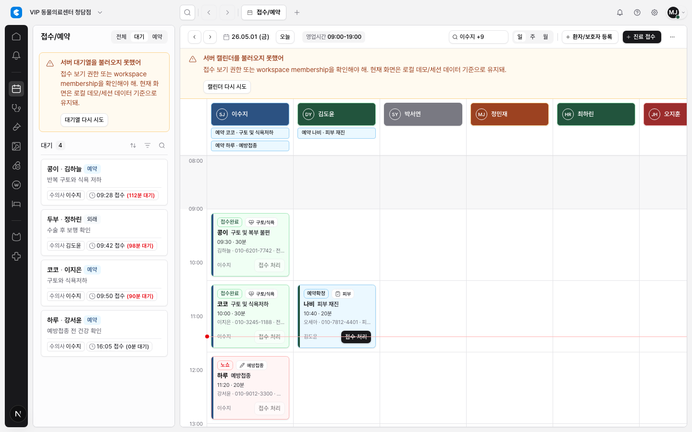
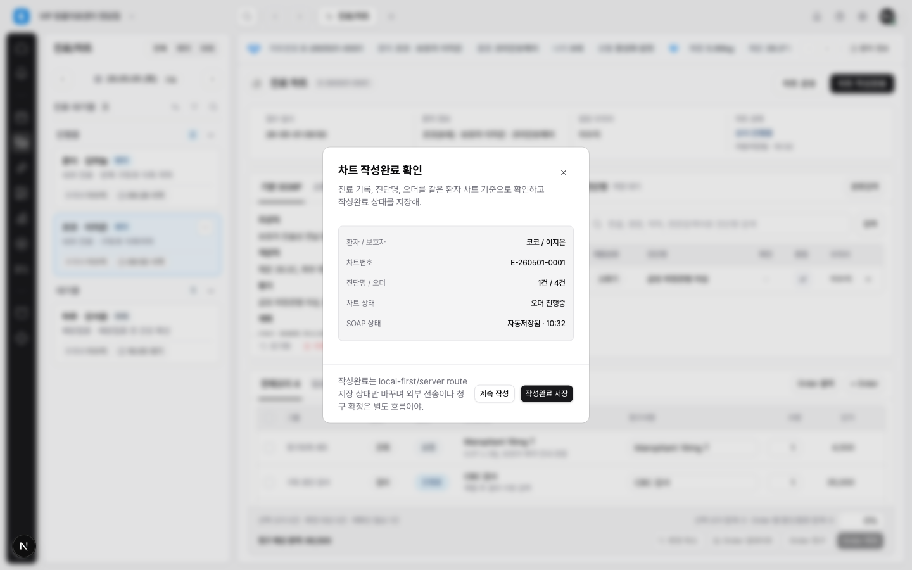
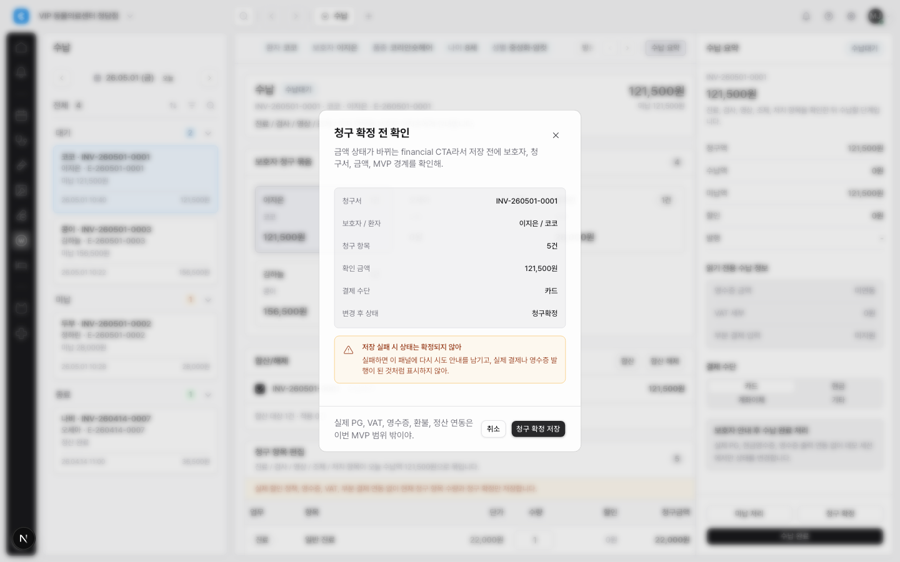
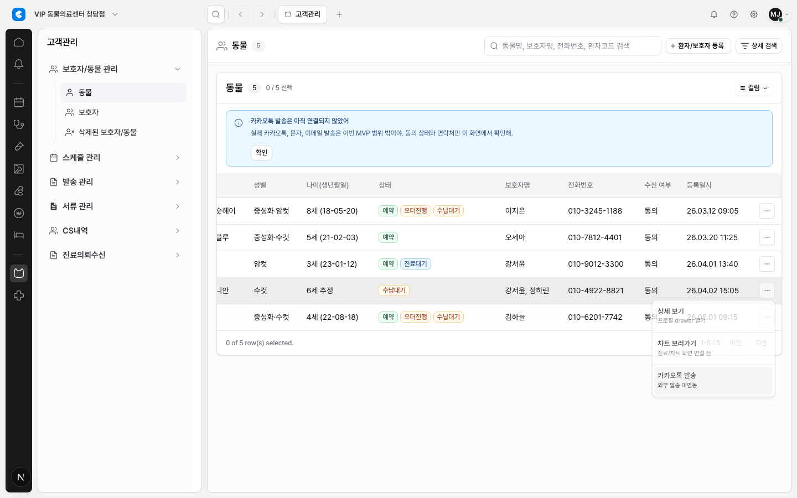

Final UI/UX A-Grade Closeout Report
Product MVP의 접수, 진료/차트, 수납, 고객관리 대표 흐름을 기준으로 UI/UX 통일성 개선 결과를 최종 점검했다. 기준 감사의 C+ 상태에서 시작했던 dialog, alert, CTA, menu, calendar affordance, mock/live boundary 규칙은 핵심 workflow에서 같은 제품 규칙으로 읽히는 수준까지 올라왔다.
최종 판정: A A+ 미달: 전역 utility/token debt 잔존 Human Review 준비
비개발자 요약
사용자는 이제 접수, 차트 작성완료, 청구/수납, 고객 row menu를 오갈 때 화면마다 다른 규칙을 다시 학습하지 않아도 된다. 위험한 버튼은 먼저 확인하고, 실패한 작업은 복구 행동을 보여주며, 미연결 기능은 조용히 실패하지 않고 현재 MVP 경계를 설명한다.
A+로 보지 않은 이유는 명확하다. 이번 프로젝트는 핵심 workflow의 일관성과 affordance를 고쳤지만, 앱 전체의 spacing/font arbitrary utility를 전면 토큰화하는 장기 정리는 아직 남아 있다. 이 잔여 부채는 core workflow 신뢰를 막지는 않지만, 전역 디자인 시스템 완성도 측면에서는 후속 작업이다.
A-Grade Gate 판정
| Gate | 판정 | 근거 |
|---|---|---|
| High matrix item unresolved 없음 | 통과 | UXA-01~04는 scope/matrix, shared component, workflow adoption, focused test evidence로 닫혔다. |
| 10개 중 8개 이상 완전 통과 | 통과 | UXA-01~10 모두 A gate 기준을 충족한다. 단, UXA-01의 전역 utility debt는 A+ blocker로 남긴다. |
| 대표 4개 화면 before/after 증거 | 통과 | 접수, 차트 dialog, 수납 financial CTA, 고객 row menu evidence를 캡처했다. |
| 핵심 workflow interaction evidence | 통과 | 접수 empty slot, chart confirmation, billing recovery, customer/reception menu focused Playwright 9개 통과. |
| 상태/오류/미연결/mock-live 경계 구분 | 통과 | inline alert, dialog preflight, unavailable feedback copy가 색상만이 아니라 제목, 위치, 행동으로 의미를 구분한다. |
Acceptance Matrix 결과
| ID | 결과 | 판정 근거 | 주요 Linear |
|---|---|---|---|
| UXA-01 | A 통과 | Dialog, alert, CTA, menu, queue spacing, control height는 shared component/variant로 정리됐다. 전역 arbitrary utility 청소는 A+ 후속 부채다. | DEN-203, DEN-205, DEN-211 |
| UXA-02 | 통과 | EmrDialogShell과 confirm/form/wide-form variants가 chart/billing 흐름에 적용됐다. |
DEN-205, DEN-208, DEN-209 |
| UXA-03 | 통과 | 접수 read failure와 수납 저장 실패가 persistent inline alert, retry, fallback copy를 제공한다. | DEN-204, DEN-207, DEN-208 |
| UXA-04 | 통과 | state-changing/financial/unavailable CTA가 taxonomy와 preflight/failure recovery 규칙을 따른다. | DEN-206, DEN-208, DEN-209 |
| UXA-05 | 통과 | 고객 row menu와 접수 card menu가 shared menu, Escape close, unavailable feedback을 사용한다. | DEN-210 |
| UXA-06 | 통과 | 상태/주의/정보 의미가 alert severity, status badge, CTA risk copy로 분리됐다. | DEN-204, DEN-207, DEN-211 |
| UXA-07 | 통과 | 접수 calendar empty slot affordance는 기본 상태에서 조용하고 hover/focus에서만 + 접수를 드러낸다. |
DEN-211 |
| UXA-08 | 통과 | local demo, live read failure, 외부 연동 미지원, PG/VAT/영수증 미연동 경계가 화면 안에서 반복적으로 설명된다. | DEN-204, DEN-207, DEN-208, DEN-209 |
| UXA-09 | 통과 | 대기열 카드 재사용, 8px queue card gap, shared table/menu primitives가 touched surfaces에서 일관되게 적용됐다. | DEN-210, DEN-211 |
| UXA-10 | 통과 | 고위험 흐름은 global help에 의존하지 않고 action 근처 dialog, inline notice, unavailable feedback을 제공한다. | DEN-206, DEN-208, DEN-209 |
대표 Evidence




검증 결과
- 통과
npx tsc --noEmit -
통과
npm run lint -- --ignore-pattern '.worktrees/**'기존 warning 5건은 이번 프로젝트 이전부터 남아 있는 hook dependency/unused 경고다. -
통과
npx playwright test tests/reception.spec.ts tests/chart.spec.ts tests/billing.spec.ts tests/customer.spec.ts --grep "reception read failures|reception opens the walk-in form from an empty calendar slot|reception card action menu|chart safety context|chart unavailable order actions|chart workspace renders queue|billing workspace renders|billing financial confirmation failure|customer row action menu"9 passed. - 통과 visual screenshot capture for reception, chart, billing, customer, empty slot states.
- 통과
npm run docs:check
남은 Risk와 제외 범위
A+를 막는 주된 잔여 부채는 전역 spacing/font arbitrary utility 정리다. 기준 감사의 정량 근거였던 arbitrary utility 약 1,978회는 이번 프로젝트의 대표 workflow 안에서 제어 가능한 규칙으로 낮췄지만, 앱 전체 token migration 프로젝트로 완전히 제거한 것은 아니다.
- 이번 판정은 Product MVP 대표 workflow의 UI/UX 통일성 판정이며, live Supabase, RLS, 결제, 영수증, 외부 연동 완성을 의미하지 않는다.
- 모바일/좁은 viewport 전체 재검증은 별도 responsive QA 이슈로 분리하는 편이 맞다.
- 전역 density/token cleanup은 A+ 목표 후속 이슈로 권장한다.
다음 추천 작업
- A+ 후보: 전역 arbitrary spacing/font utility를 token/variant로 줄이는 design-system cleanup.
- Responsive QA: 1280px 이하 및 tablet width에서 module panel, drawer, dialog overlap 재검증.
- Regression pack: 이번 프로젝트의 대표 UI 상태를 screenshot regression 후보로 묶기.